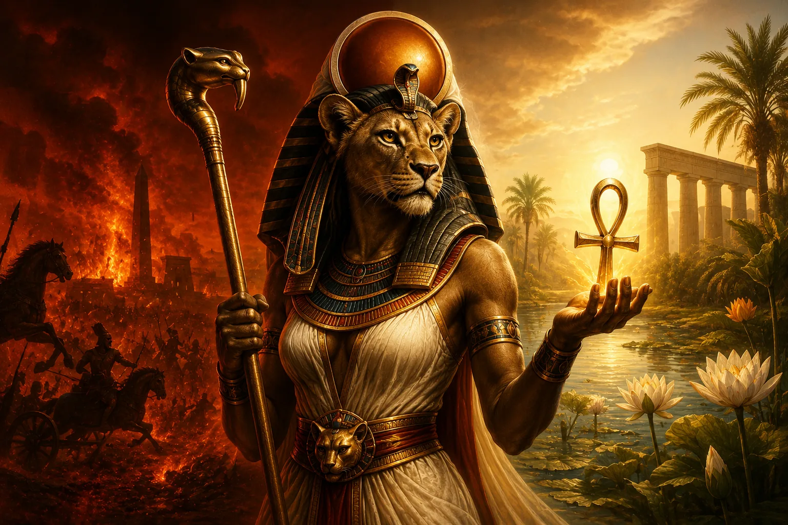

Antik Mısırlılar aynı tanrıçadan hem korkuyor hem de yardım bekliyordu. Sekhmet savaş meydanında firavunun düşmanlarını yok eden, salgın ve hastalık gönderebilen, öfkesi kontrolden çıktığında insanlığı yok oluşun eşiğine sürükleyebilen bir güçtü. Fakat hastalık kapıya geldiğinde yine ona yakarılıyor, koruyucu kudretinin felaketi uzaklaştırması isteniyor ve onunla bağlantılı rahipler şifa uygulamalarında rol oynuyordu. Modern bakışla yıkım ve iyileşme birbirine zıt görünebilir; Antik Mısır düşüncesinde ise aynı ilahi kuvvetin iki yönü olabiliyordu. Bir güç hastalığı gönderebiliyorsa onu durdurmaya da muktedirdi; düşmanı yok edebiliyorsa kralı ve düzeni koruyabilirdi.
Peki Sekhmet kimdir? En kısa ve güvenli cevapla Sekhmet, özellikle Memfis geleneğinde güçlü bir yere sahip olan, çoğunlukla dişi aslan başlı kadın biçiminde tasvir edilen; savaş, kraliyet koruması, salgın hastalık, ilahi öfke ve şifayla ilişkilendirilen Antik Mısır tanrıçasıdır. Güneş tanrısı Ra’nın kızı ve onun yıkıcı-koruyucu dişil kudretini ifade eden “Ra’nın Gözü” rollerinden biri olarak görülebilirdi. Memfis’te Ptah’ın eşi ve Nefertum’un annesi olarak kutsal bir aile içinde yer alırken, başka dönem ve merkezlerde Hathor, Mut, Bastet, Tefnut ve diğer güneş-göz tanrıçalarıyla kesişen özellikler kazandı. Bu ilişkiler, Sekhmet’i tek cümlelik bir “savaş tanrıçası” tanımına sığdırmanın neden yetersiz olduğunu gösterir. Onu anlamak, Antik Mısır’ın felaket ile korunma, korku ile ibadet, hastalık ile şifa arasındaki sınırları nasıl düşündüğünü anlamaktır.
Sekhmet Kimdir ve Ne Tanrıçasıdır?
Sekhmet’in kimliği, Antik Mısır dininin tanrıları katı görev tanımlarına ayırmayan yapısını iyi gösterir. Günümüzde “savaş tanrıçası”, “şifa tanrıçası” veya “salgın tanrıçası” gibi etiketler kullanmak açıklayıcıdır; fakat Mısırlılar için bu işlevler birbirinden yalıtılmış değildi. Sekhmet’in tehlikeli yönü, krala ve kozmik düzene karşı olan düşmanları yok eden koruyucu yönünün de kaynağıydı. Aynı şekilde hastalıkla ilişkilendirilmesi, ondan hastalığı uzaklaştırmasının istenmesini anlamsız kılmıyordu. Tam tersine, tehdidi yöneten ilahi gücü yatıştırmak ve kendi lehine çevirmek dinsel mantığın merkezindeydi.
Sekhmet özellikle Memfis’le bağlantılıydı. Burada büyük yaratıcı ve zanaatkâr tanrı Ptah’ın eşi, lotus ve yenilenme çağrışımları taşıyan Nefertum’un annesi olarak Memfis üçlüsünün parçasıydı. Bu ilişki yalnızca geç dönem bir popüler soy ağacı değildir; örneğin Büyük Harris Papirüsü’nün Memfis bölümündeki sahnelerde Ptah, Sekhmet ve Nefertum kutsal aile olarak birlikte gösterilir. Bununla birlikte Antik Mısır dini üç bin yıla yaklaşan bir tarih boyunca değiştiği için “Sekhmet’in ailesi kesin olarak budur ve her Mısırlı her dönemde böyle inanmıştır” demek fazla kesin olur. Yerel teolojiler tanrıların akrabalıklarını, birleşik biçimlerini ve görevlerini farklı şekillerde düzenleyebiliyordu.
Sekhmet’in savaşçı kimliği de yalnızca şiddet sevgisiyle açıklanamaz. Firavun ideolojisinde kral, Maat’ı yani düzeni koruyan ve düzensizliği bastıran kişiydi. Kraliyet düşmanlarının yenilmesi bu kozmik dil içinde anlatılabildiği için Sekhmet’in ateşli, yıkıcı kudreti kralın düşmanlarını ortadan kaldıran bir güç olarak kullanılabiliyordu. Bu yüzden tanrıçanın korkutuculuğu Mısır açısından otomatik olarak “kötülük” anlamına gelmez. Kontrol altında ve doğru yöne çevrildiğinde aynı korkunç güç koruyucu oluyordu.
Sekhmet’in tarihsel izleri yalnızca mitolojik anlatılarda değildir. Tapınak yazıtları, heykeller, büyü ve şifa metinleri, rahiplik unvanları ve kraliyet anıtları onun kültünün farklı yönlerini gösterir. Özellikle Yeni Krallık döneminde tanrıçanın hem kraliyet hem sağlık alanındaki görünürlüğü dikkat çekicidir. Buna rağmen elimizde Sekhmet hakkında tek bir “kutsal kitap” yoktur. Farklı dönemlerden gelen kanıtları bir araya getirirken değişimi ve yerel çeşitliliği hesaba katmak gerekir.
Sekhmet Adı Ne Anlama Gelir?
Sekhmet’in adı, Mısır dilindeki sḫm köküyle, yani güç, kudret ve etkin kuvvet fikriyle bağlantılıdır. Bu nedenle adı genellikle “Güçlü Olan”, “Kudretli Olan” ya da İngilizce literatürde “the Powerful One” biçiminde çevrilir. Büyük müze koleksiyonlarında Sekhmet eserleri açıklanırken de bu etimolojik anlam vurgulanır. İsim, tanrıçanın karakteriyle olağanüstü uyumludur: Sekhmet’in temel özelliği yalnızca savaşçı olması değil, karşı konulması zor bir ilahi kudreti temsil etmesidir.
Bu etimolojiyi modern spiritüel yorumlarla karıştırmamak gerekir. İnternette Sekhmet’in adından kişisel enerji, kadınsı güç, modern psikolojik dönüşüm veya ezoterik anlamlar çıkaran çok sayıda metin bulunur. Bunlar günümüz inançlarının ve yeniden yorumlarının konusu olabilir; fakat Antik Mısır dilindeki adın tarihsel anlamını kanıtlamaz. Mısırbilim açısından güvenli başlangıç noktası sḫm ile kurulan güç-kudret bağlantısıdır.
İsmin önemi yalnızca sözlük anlamında değildir. Sekhmet’in ikonografisi, mitleri ve kültü sürekli olarak bu “etkin güç” fikrini farklı alanlara taşır. Savaşta düşmana yönelirse yıkımdır; salgınla ilişkilendirildiğinde korkudur; kralı koruduğunda savunmadır; hastalığı uzaklaştırdığında şifadır. Sekhmet’in farklı rollerini birbirine bağlayan ortak damar tam da budur.
Sekhmet Nasıl Görünür? Aslan Başı, Güneş Diski ve Sembolleri
Sekhmet’in en tanınabilir tasviri, kadın bedenine sahip dişi aslan başlı bir tanrıçadır. Başında çoğu zaman güneş diski ve onunla birlikte uraeus, yani yükselmiş kobra bulunur. Elinde yaşamı ifade eden ankh işareti ve bazı heykellerinde papirüs biçimli bir asa taşıyabilir. III. Amenhotep döneminden kalan büyük granodiyorit heykeller, bu ikonografinin en etkileyici örneklerindendir. Bugün büyük müze koleksiyonlarında korunan örneklerde dişi aslan başı, güneş diski, uraeus, papirüs asası ve ankh aynı kompozisyonda görülebilir.
Dişi aslan biçimi tesadüf değildir. Aslan, Mısır çevresinde fiziksel tehlike ve hâkimiyet çağrışımı taşıyan güçlü bir hayvandı; dişi aslanın avcı niteliği Sekhmet’in saldırgan kudreti için uygun bir görsel dildi. Fakat ikonografiyi “aslan güçlüdür, Sekhmet de güçlüdür” düzeyine indirmek yetersiz kalır. Sekhmet güneşle bağlantılı bir tanrıçadır. Güneşin hayat veren ışığı aynı zamanda yakıcı, kurutucu ve öldürücü olabilir. Bu ikilik Sekhmet’in karakterine son derece uygundur: güneşin gücü yaşamın koşuludur ama kontrolsüz sıcaklık ölümcül olabilir.
Başındaki güneş diski bu solar bağlantıyı görünür hâle getirir. Uraeus ise kraliyet ve koruma bağlamıyla ilişkilidir; kralın alnındaki kobra düşmana karşı ateş püskürten koruyucu güç olarak düşünülebilirdi. Sekhmet’in Ra’nın Gözü oluşu, güneş diski ve uraeus birlikte değerlendirildiğinde, onun yalnızca “aslan kadın” olmadığını açıkça gösterir. Bedeni ve başlığı, güneş tanrısının düşmanlara yönelen dişil kudretini görsel hâle getirir.
Yine de aslan başlı her Mısır tanrıçasını Sekhmet olarak tanımlamak yanıltıcı olur. Tefnut, Menhit, Pakhet ve bazı bağlamlarda Mut gibi başka tanrıçalar da leonine biçimler alabilir. Bastet’in erken ikonografisi de sonraki evcil kedi görüntüsünden daha aslanımsı olabilir. Bu nedenle bir heykelin kimliği yalnızca baş biçiminden değil, yazıt, buluntu bağlamı, başlık ve diğer ikonografik ayrıntılardan hareketle belirlenmelidir.
Sekhmet tasvirlerindeki durağanlık da yanıltıcı olabilir. Özellikle III. Amenhotep’in seri hâlinde yaptırdığı heykellerde tanrıça sakin, ağırbaşlı ve neredeyse değişmez bir duruşla gösterilir. Oysa bu görsel sakinlik, mitlerdeki öfkesini ortadan kaldırmaz. Mısır tapınak heykeli bir anlatı sahnesindeki saldırı anını göstermek zorunda değildir; tanrının sürekli, düzenlenmiş ve kült içinde erişilebilir varlığını temsil eder. Bu yüzden heykeldeki dingin Sekhmet ile metinlerdeki yıkıcı Sekhmet birbirine aykırı değildir.
Ra’nın Gözü Olarak Sekhmet
Sekhmet’in en önemli kimliklerinden biri “Ra’nın Gözü”dür. Bu ifade ilk bakışta Ra’nın fiziksel gözünden söz ediyormuş gibi anlaşılabilir, fakat Mısır dininde Göz çok daha geniş bir tanrısal kavramdır. Ra’nın Gözü, güneş tanrısının kendisinden çıkan, dünyada etkin olan, koruyabilen, cezalandırabilen ve bağımsız bir dişil tanrıça biçiminde kişileştirilebilen kudretini ifade eder. Bu yüzden Göz hem güneşsel hem kraliyetle ilişkili hem de tehlikeli olabilir.
Ra’nın Gözü Ne Anlama Geliyordu?
Gözün en çarpıcı özelliği, tek bir tanrıçaya ait sabit bir makam olmamasıdır. Hathor, Sekhmet, Tefnut, Bastet, Mut ve başka tanrıçalar farklı metinlerde ve dönemlerde Ra’nın Gözü rolünü üstlenebilir. Bu durum modern okur için kafa karıştırıcıdır çünkü modern mitoloji özetleri çoğu zaman her tanrının tek bir adı, ailesi ve görevi olması gerektiğini varsayar. Antik Mısır dini ise ilahi kimliklerin birleşmesine, ayrışmasına ve aynı rolün farklı yerel tanrıçalar tarafından taşınmasına daha açıktı.
Ra’nın Gözü’nün yıkıcı yönü özellikle leonine tanrıçalarla uyumluydu. Güneş tanrısının düşmanlarına yöneltilen ateşli güç, dişi aslanın saldırganlığıyla birleşebiliyordu. Fakat Göz yalnızca öfke değildir. Koruma, kraliyet meşruiyeti, güneşin yenilenmesi ve tanrısal düzenin sürmesiyle de bağlantılıdır. Sekhmet’in “Ra’nın Gözü” olması, dolayısıyla onu Ra’nın emrindeki basit bir savaşçıya indirgemez; tanrının dünyada etkinleşen kudretinin bir biçimi hâline getirir.
Göz kavramının bu esnekliği, Sekhmet-Hathor veya Sekhmet-Mut gibi birleşmeleri de anlaşılır kılar. Mısır teolojisinde aynı işlevi paylaşmak, iki tanrıçanın bütün tarih boyunca özdeş olması anlamına gelmez. Bir tanrıça belirli bir ritüelde veya metinde Göz’ün öfkeli yönünü üstlenirken başka bir bağlamda farklı özellikleri öne çıkabilir. Bu nedenle Ra’nın Gözü’nü tek bir mitolojik karakterin özel adı değil, farklı tanrıçalarda somutlaşabilen güçlü bir teolojik rol olarak düşünmek daha doğrudur.
Sekhmet Neden Ra’nın Kızı Sayılıyordu?
“Ra’nın kızı” ifadesi de yalnızca insan ailelerine benzeyen biyolojik bir soy ağacı gibi okunmamalıdır. Göz tanrıçaları güneş tanrısından çıkan dişil kudret olarak tasavvur edildiğinde “kız” ilişkisi bu teolojik yakınlığı anlatmanın yollarından biridir. Sekhmet’in güneş diski taşıması, ateşli güçle ve kralın düşmanlarını yok etmekle ilişkilendirilmesi bu bağın farklı yüzleridir.
Bu noktada önemli olan, Sekhmet’in Ra ile ilişkisini Memfis’teki Ptah-Nefertum ailesiyle çelişki gibi görmemektir. Antik Mısır tanrıları aynı anda farklı teolojik sistemlerin içinde farklı ilişkiler taşıyabiliyordu. Bir tanrıçanın Ra’nın kızı olması, başka bir yerel gelenekte Ptah’ın eşi olmasını geçersiz kılmaz. Mısır dini çoğu zaman bu tür çoklu kimlikleri ortadan kaldırmak yerine yan yana yaşatmıştır.
Sekhmet’in Ra’nın kızı olarak düşünülmesi ayrıca onun kraliyet korumasına neden bu kadar uygun olduğunu açıklar. Firavun kendisini güneşsel krallık ideolojisi içinde konumlandırdığında, Ra’nın düşmanları yakan Gözü kralın düşmanlarına karşı da işlev görebilirdi. Böylece aile dili, kozmoloji ve siyasi ideoloji aynı tanrısal figürde birleşir.
Sekhmet’in İnsanlığı Yok Etme Hikâyesi
Sekhmet denildiğinde bugün en çok anlatılan hikâye, insanlığın neredeyse onun öfkesiyle yok olduğu anlatıdır. Bu öykü modern bir internet efsanesi değildir; çekirdeği Yeni Krallık döneminde kraliyet mezarlarında korunan ve günümüzde genellikle Göksel İnek Kitabı adı verilen kompozisyona dayanır. Metnin erken tanıkları arasında Tutankhamun’un dıştaki yaldızlı tapınaklarından biri bulunur; daha kapsamlı sürümler Seti I, II. Ramses, III. Ramses ve VI. Ramses gibi hükümdarların mezarlarıyla ilişkilidir.
Anlatı yalnızca Sekhmet’in “kana susamışlığı” hakkında bir korku hikâyesi değildir. Ra’nın yeryüzündeki krallığının sonuna, insanların tanrısal otoriteye karşı davranışına, ilahi cezaya ve tanrıların insan dünyasından göğe çekilmesine uzanan kozmolojik bir çerçevenin parçasıdır. Sekhmet bölümü bu daha büyük anlatının en dramatik sahnesidir. Hikâyeyi yalnızca kırmızı bira anekdotuna indirgemek, metnin insanlık ile tanrılar arasındaki mesafenin nasıl kurulduğuna ilişkin daha geniş anlamını kaybettirir.
İnsanlar Ra’ya Neden Başkaldırdı?
Metinde Ra yaşlanmıştır ve insanlar onun aleyhine plan kurmaya başlar. Ra bunun üzerine tanrısal meclisi toplar. Nun ve diğer tanrılarla yapılan danışmanın ardından Ra’nın Gözü’nün insanlara karşı gönderilmesi kararlaştırılır. Buradaki mantık, öfkeli bir tanrının rastgele katliam emri vermesinden daha geniştir: tanrısal kralın otoritesine yönelen isyan, kozmik düzenin ihlali olarak ele alınır ve Göz bu ihlali cezalandıracak etkin güçtür.
İnsanlar çöle kaçsa da Göz onları takip eder. Metnin bu bölümünde Hathor adı belirgin biçimde yer alır; tanrıça insanlara saldırır ve Ra onun yaptıklarından memnuniyet duyar. Ardından Sekhmet adı devreye girer. İşte modern özetlerin “Ra, Hathor’u Sekhmet’e dönüştürdü” cümlesiyle kolaylaştırdığı karmaşık nokta budur.
Ra’nın yaşlanması da hikâyeyi sıradan bir isyan anlatısından ayırır. İnsanların davranışı, tanrısal krallığın yeryüzündeki eski düzeninin sürdürülemez hâle gelmesine eşlik eder. Göksel İnek Kitabı’nın devamında Ra’nın göğe çekilmesi ve kozmik düzenin yeniden düzenlenmesi anlatılır. Dolayısıyla Sekhmet’in saldırısı, daha büyük bir kozmolojik geçişin içinde yer alır.
Hathor mu Sekhmet mi İnsanları Cezalandırdı?
Popüler anlatıda olay çoğu zaman şöyle sunulur: Ra önce kızı Hathor’u gönderir, Hathor öfkelenince Sekhmet’e dönüşür, sonra bira içerek yeniden Hathor olur. Bu anlatı öğretici bir özet olabilir; fakat birincil metnin tanrıça kimliklerini modern bir çizgi film dönüşümü kadar mekanik biçimde kurduğunu söylemek zordur.
Göksel İnek Kitabı’nın tanrısal kimlik dili, Göz tanrıçalarının birbirine geçebilen rollerini yansıtır. Hathor ve Sekhmet burada birbirinden tamamen kopuk iki karakter gibi davranmaz; Göz’ün cezalandırıcı, leonine ve öfkeli yönü Sekhmet adıyla ifade edilirken Hathor kimliği de anlatının içinde kalır. Bu nedenle “Sekhmet Hathor’un öfkeli hâlidir” cümlesi belirli mitolojik bağlamı açıklamak için kullanılabilir, fakat bunu bütün Mısır tarihi boyunca iki tanrıçanın her zaman aynı varlık olduğu anlamına genişletmek isabetli değildir.
Bu ayrım Sekhmet hakkında internette en çok tekrarlanan yanlış anlaşılmalardan birini düzeltir. Mısır tanrıları arasındaki birleşmeler çoğu zaman modern romanlardaki fiziksel dönüşümler gibi işlemez. Bir tanrı başka bir tanrıyla özdeşleşebilir, onun bir yönünü taşıyabilir veya birleşik bir adla anılabilir; yine de başka kült bağlamlarında bağımsız kimliğini koruyabilir. Hathor ve Sekhmet ilişkisi tam olarak bu esnek teolojik dünyanın ürünüdür.
Sekhmet’in katliamı devam ettikçe sorun değişir. İlk amaç isyanı cezalandırmaktır; fakat yıkıcı güç serbest bırakıldığında insanlığın tamamen ortadan kalkması tehlikesi doğar. Ra artık katliamı durdurmak ister. Fakat Göz’ün öfkesi basit bir emirle geri çevrilemez. Böylece Mısır mitolojisinin en sıra dışı kurtuluş planlarından biri devreye girer.
Kırmızı Bira Sekhmet’i Nasıl Durdurdu?
Ra, Elephantine bölgesinden kırmızı bir madde getirilmesini emreder. Mısır dilindeki maddenin tam karşılığı ve farklı çevirilerde nasıl verilmesi gerektiği tartışılmış olsa da modern akademik anlatılarda çoğunlukla kırmızı aşıboyası/okra ile ilişkilendirilir. Bu madde büyük miktarda biraya karıştırılarak içecek kanı andıracak biçimde kırmızı hâle getirilir. Metin yedi bin kap biradan söz eder. Gece boyunca karışım tanrıçanın ilerleyeceği alanlara dökülür.
Tanrıça sabah kırmızı sıvıyı görür, onu içer ve sarhoş olur. Böylece insanları tanımayacak veya katliamı sürdüremeyecek hâle gelir; insanlık yok olmaktan kurtulur. Burada sık yapılan bir hatayı düzeltmek gerekir: bira insan kanıyla karıştırılmaz. Hikâyenin mantığı tam tersine, biranın kana benzetilmesidir.
Bu sahnenin önemi yalnızca “tanrıçayı bira içirerek kandırdılar” şeklindeki şaşırtıcı ayrıntıda değildir. Sekhmet’in yıkıcı gücünün ritüel olarak yatıştırılması, daha geniş Mısır dinindeki tehlikeli tanrısal kuvveti sakinleştirme düşüncesiyle uyumludur. Müzik, içki, sunular ve yatıştırıcı ritüeller özellikle öfkeli Göz tanrıçalarıyla bağlantılı farklı kült bağlamlarında karşımıza çıkar. Daha sonraki festivallerde sarhoşluk ve tanrıçanın yatıştırılması arasında ilişkiler kurulmuştur; fakat bütün Mısır’daki her içki festivalini doğrudan ve yalnızca “Sekhmet’in kırmızı bira festivali” olarak tanımlamak aşırı genelleyici olur. Hathor ve Mut gibi başka tanrıçaların kültleri ve yerel gelenekler de bu ritüel dünyaya dahildir.
Anlatının bir başka önemli tarafı, ilahi öfkenin tamamen yok edilmemesidir. Sekhmet’in gücü evrenden çıkarılmaz; yatıştırılır ve düzen içine geri alınır. Bu motif, tanrıçanın tarihsel kültünü anlamak açısından son derece önemlidir. Sekhmet’e yönelik ibadetin amacı çoğu zaman onun gücünü inkâr etmek değil, bu gücün felakete dönüşmesini engellemekti. Mitolojik anlatı ile ritüel düşünce arasındaki bağ tam burada belirginleşir.
Sekhmet Neden Savaş Tanrıçasıydı?
Sekhmet’in savaşla bağlantısı, onun Ra’nın düşmanlara yönelen ateşli Gözü oluşundan ve kraliyet ideolojisiyle kurduğu ilişkiden ayrı düşünülemez. Firavun yalnızca siyasi bir hükümdar değildi; Maat’ın korunmasıyla bağlantılı kutsal bir görev taşıyordu. Kraliyet metinlerinde yabancı düşmanların ezilmesi veya isyanın bastırılması, yalnızca askerî başarı değil düzenin düzensizlik üzerindeki zaferi olarak sunulabilirdi. Bu ideolojik dil Sekhmet için güçlü bir alan açıyordu. Onun öfkesi düşmana yöneldiğinde korkulan bir felaket değil, Mısır kralını koruyan ilahi silaha dönüşüyordu.
Sekhmet’in savaşçı niteliğini yalnızca fiziksel güç üzerinden açıklamak bu açıdan eksik kalır. Tanrıça güneşin kavurucu kudretiyle, uraeus’un düşmanı yakan korumasıyla ve Ra’nın Gözü’nün cezalandırıcı işleviyle bağlantılıydı. Kralın düşmanları karşısındaki yenilmezliği Sekhmet’in kudretiyle benzetilebildiğinde, savaş alanındaki şiddet kozmik bir çerçeve kazanıyordu. Buradaki amaç kaosu büyütmek değil, Mısır ideolojisinin bakış açısından düzeni tehdit eden unsuru ortadan kaldırmaktı.
Firavunun Düşmanlarına Karşı Sekhmet
Yeni Krallık kraliyet söyleminde kralın savaşçı kudreti sık sık tanrısal benzetmelerle büyütülür. Sekhmet’in adı ve öfkesi bu dil içinde kralın karşı konulmaz saldırısını ifade edebilirdi. Bu, firavunun her askerî başarısının yalnızca Sekhmet’e atfedildiği anlamına gelmez; Amun, Montu, Ra-Horakhty ve başka tanrılar da savaş ve kraliyet zaferi bağlamında önemli roller taşırdı.
Sekhmet’i ayıran nokta, savaşın şiddetini güneşin yakıcı ve cezalandırıcı gücüyle birleştirmesidir. Tanrıça düşmanı yalnızca fiziksel olarak yenmez; ilahi düzenin karşısındaki tehdidi tüketen bir ateş gibi tasarlanabilir. Uraeus ile olan bağlantısı da bu koruyucu saldırganlığı güçlendirir: kralın alnındaki kobra, krala yaklaşan düşmana karşı ölümcül savunmanın simgesidir.
Kraliyet ideolojisindeki bu rol Sekhmet’in bağımsız bir “ordu tanrıçası” gibi düşünülmesini gerektirmez. Antik Mısır’da savaşın dinsel dili birçok tanrıyı kapsıyordu ve hükümdar farklı bağlamlarda farklı tanrıların kudretine benzetilebilirdi. Sekhmet’in özgünlüğü, düşmanı yok eden şiddetin aynı zamanda hastalık, ateş ve ilahi öfke alanındaki güçleriyle kesişmesidir.
Savaş, Güneşin Yakıcı Gücü ve Maat’ın Korunması
Sekhmet’in şiddetini “kaos tanrıçası” diye tanımlamak yanıltıcıdır. O, kontrolsüz kaldığında tehlikeli olabilir; İnsanlığın Yok Edilişi anlatısı bunun en güçlü örneğidir. Fakat kraliyet bağlamında gücü çoğu zaman düzeni korumaya yöneltilir. Sekhmet’in öfkesi Maat’ın düşmanlarına çevrildiğinde yıkım, korumanın aracıdır.
Bu düşünce tanrıçanın şifa rolünü anlamaya da hazırlık yapar. Sekhmet’in gücü başlı başına iyi veya kötü değildir; kime, neye ve hangi ritüel bağlamda yöneldiği belirleyicidir. Savaş meydanında düşmanı yok eden ateş, hastalık bağlamında insan için korkunç bir tehdide dönüşebilir. Fakat aynı gücün yatıştırılması hastalığın uzaklaşması demektir.
Maat ile bağlantı Sekhmet’i “ölüm ve yıkım isteyen” tek boyutlu bir figür olmaktan çıkarır. Antik Mısır düşüncesinde düzen, yalnızca barışçıl bir durağanlık değildi; düzeni tehdit eden güçlerin sürekli olarak bastırılması gerekiyordu. Güneş tanrısının her gün yeniden doğması ve düşmanlarını yenmesi gibi kral da siyasal ve kozmik düzeni sürdürmeliydi. Sekhmet’in saldırganlığı bu devamlı savunma fikrinin korkutucu ama gerekli yüzlerinden biri olabilirdi.
Hastalık Gönderen Tanrıça: Sekhmet’in Korkulan Yönü
Antik Mısırlılar hastalığı modern mikrop teorisiyle açıklamıyordu. Hastalıkların bedensel nedenlerini gözlemleyebiliyor, yaralanmaları ve çeşitli belirtileri tedavi etmeye çalışıyorlardı; fakat tıp, din ve büyü arasında modern dünyadaki kadar kesin sınırlar yoktu. Görünmeyen nedenlerle ortaya çıkan hastalıklar tanrılar, tehlikeli varlıklar, büyüsel etkiler veya yılın uğursuz dönemleriyle ilişkilendirilebilirdi. Sekhmet bu dünyada özellikle korkulan bir güçtü.
Mısır metinlerinde salgın ve tehlikeli hastalıkla ilgili bazı ifadelerin Sekhmet’le bağlantısı, tanrıçanın yalnızca savaş alanında değil gündelik hayatın kırılganlığında da hissedildiğini gösterir. Özellikle yılın belirli geçiş dönemleri, takvimsel açıdan tehlikeli kabul edilen günler ve tanrıçanın “habercileri” ile “okları” hastalık düşüncesinin dinsel diline dâhil olabiliyordu. Burada dikkat edilmesi gereken nokta, bu ifadeleri modern epidemiyolojiye çevirmemektir. Mısırlılar hastalıkların yayılımına ilişkin pratik gözlemlere sahip olabilirdi; fakat Sekhmet’in okları bakterilerin veya virüslerin antik adı değildi.
Sekhmet’in Okları ve Salgın Hastalıklar
Sekhmet’in hastalık getiren güçleri bazı metinlerde “oklar”, “haberciler” veya ona bağlı tehlikeli varlıklarla anlatılır. Leiden I 346 gibi koruyucu metinlerde Sekhmet’le bağlantılı tehlikeli güçlerin yılın kritik zamanlarında etkili olabileceği bir dinsel dünya görülür. Bu okları gerçek savaş silahlarından oluşan fantastik bir cephanelik gibi düşünmek yanlış olur. Mısırbilim literatürü bunları görünür fiziksel bir saldırı olmadan gelen hastalık ve felaket için kullanılan güçlü bir metaforik-dinsel dil içinde değerlendirir.
“Sekhmet’in Yedi Oku” adıyla anılan gelenek de bu çerçevede önemlidir. Yedi sayısı, koruyucu-büyüsel bağlamlarda tamamlanmış bir grup fikrini taşıyabilir ve Sekhmet’in tehlikeli güçlerinin farklı biçimlerde kişileştirilmesine olanak verir. Ancak internette görülen sabit isim listeleri, modern fantastik karakter tanımları veya her bir oka ayrı bir hastalık atayan şemalar güvenilir antik kanıtlarla karıştırılmamalıdır. Kaynaklar dönem ve metin türüne göre değişir.
Yılın sonundaki epagomenal günler bu korku dünyasını anlamak açısından özellikle önemlidir. Mısır takviminin düzenli aylarına eklenen beş gün, mitolojik açıdan önemli olmakla birlikte geçiş zamanlarının taşıdığı belirsizlik nedeniyle koruyucu uygulamalarla da ilişkilendirilebilirdi. Yeni yıl yaklaşırken Sekhmet’in habercilerinden ve hastalık getiren güçlerden korunmaya yönelik ritüel sözler, insan sağlığının kozmik takvimden bağımsız düşünülmediğini gösterir.
Burada “salgın” kelimesini kullanırken de dikkat gerekir. Antik metinlerin kullandığı kavramlar modern klinik sınıflandırmalarla bire bir eşleşmez. Bir topluluğu etkileyen hastalık, mevsimsel tehlike, ilahi öfke ve çevresel sıkıntı aynı dinsel açıklama alanında buluşabilir. Sekhmet’in hastalıkla bağlantısı gerçektir; fakat hangi tarihsel salgının doğrudan onun kültünü tetiklediğini kanıtlamak her zaman mümkün değildir.
Antik Mısırlılar Sekhmet’in Öfkesinden Nasıl Korunuyordu?
Sekhmet’ten korunmanın temel mantığı tanrıçayla savaşmak değil, onu yatıştırmak ve gücünü koruyucu yöne çevirmekti. Dualar, ilahiler, sunular, tütsü, yiyecek ve içecekler tapınak kültünün olağan araçlarıydı. Tanrıçanın farklı epitetlerle çağrılması ve tehlikeli güçlerinin uzaklaştırılmasının istenmesi, ritüelin sözel boyutunu oluşturuyordu. Sekhmet’in adını bilmek ve onu doğru sıfatlarla çağırmak, ilahi gücü ritüel düzen içine yerleştirmenin bir yolu olabilirdi.
Bu noktada modern internette dolaşan “Sekhmet ritüeli” tarifleriyle antik uygulamaları ayırmak gerekir. Günümüzde mum, kristal, belirli meditasyon teknikleri veya modern ezoterik sembollerle yapılan uygulamalar çağdaş dinsel pratikler olabilir; bunları doğrudan firavunlar dönemi tapınak ritüeli diye sunmak tarihsel değildir. Antik kült, rahiplik kurumu, tapınak ekonomisi, günlük sunular, takvimsel ayinler ve kraliyet desteği gibi çok daha geniş bir sistem içinde işliyordu.
Tanrıçanın yatıştırılması yalnızca korkuya verilen tepki de değildi. Bir tanrının kültünü sürdürmek, onun düzen içindeki yararlı rolünün devamını sağlamaya yönelik karşılıklılık anlayışının parçasıydı. Sekhmet’e sunu yapmak, onu sürekli öfkeli bir varlık olarak “rüşvetle sakinleştirmekten” daha karmaşık bir dinsel ilişkidir. Tanrıça doğru biçimde onurlandırıldığında koruma, yaşam ve sağlık sağlayabilen bir güçtür.
Sekhmet Neden Aynı Zamanda Şifa Tanrıçasıydı?
Aslında Sekhmet’in “nasıl şifa tanrıçasına dönüştüğü” sorusu biraz yanıltıcıdır; çünkü bu ifade önce yalnızca yıkım tanrıçası olduğu, sonra tarih içinde tersine dönerek şifacı olduğu izlenimi yaratır. Daha doğru yaklaşım, hastalık ve şifa rollerinin aynı teolojik mantığın iki yüzü olarak nasıl bir arada bulunabildiğini sormaktır.
Sekhmet’in heykelleri ve müze kayıtları bu ikiliği açık biçimde yansıtır: tanrıça savaş, şiddet ve hastalık getirebilir; yatıştırıldığında ise aynı güç korumaya ve iyileşmeye yönelir. Ona yönelik duaların ve rahiplik uygulamalarının sağlık alanıyla kesişmesi, şifa rolünün modern çağda uydurulmuş bir özellik olmadığını gösterir. Bununla birlikte Sekhmet’i modern anlamda “tıp tanrıçası” diye tek bir mesleki alana hapsetmek de doğru değildir.
Hastalık ile Şifa Neden Aynı Tanrıçada Birleşti?
Modern düşüncede hastalığın nedeni ile tedavinin kaynağını ayrı kategorilere koymaya alışığız. Antik dinsel sistemlerde ise felaketi gönderen gücün onu geri çekebileceği düşüncesi oldukça anlaşılırdır. Sekhmet’in öfkesi hastalık getiriyorsa onun yatıştırılması hastalığın sona ermesi anlamına gelebilir. Bu nedenle tanrıçaya dua etmek “hastalığın tanrıçasından yardım istemek” gibi mantıksal bir çelişki değildir; hastalığın üzerinde otorite sahibi olan kudreti kendi lehine çevirmeye çalışmaktır.
Bu model Sekhmet’in bütün kimliğinde görülür. Güneş yakar ama yaşamı da mümkün kılar. Dişi aslan öldürücüdür ama krala yöneldiğinde koruyucudur. Göz cezalandırır ama kozmik düzeni savunur. Sekhmet’in şifası, onun yıkıcı yönüne sonradan yapıştırılmış alakasız bir özellik olmaktan çok, tehlikeli gücün kontrol edilmesi fikriyle uyumludur.
Antik Mısır tıbbının yapısı da bu birlikteliği mümkün kılar. Günümüze ulaşan tıbbi papirüslerde ampirik gözlem ve reçetelerle büyülü sözler aynı metin dünyasında yan yana bulunabilir. Bir yaraya fiziksel müdahale etmek ile hastayı tanrısal veya büyüsel tehlikeden korumak birbirini dışlayan yöntemler değildi. Bu nedenle Sekhmet’in şifa alanındaki rolünü “bilim yerine batıl inanç” veya “tamamen modern tıp” ikilemlerinden biriyle açıklamak anakronik olur.
Sekhmet Rahipleri Gerçekten Doktor muydu?
Sekhmet rahipleri ile tıp arasındaki ilişki gerçektir; ancak internette sık görülen “Antik Mısır’ın bütün doktorları Sekhmet rahibiydi” veya “Sekhmet’in her rahibi cerrahtı” gibi genellemeler yanlıştır. Antik kaynaklarda swnw olarak adlandırılan hekimler, Serqet’le ilişkili zehir ve sokma uzmanları ve Sekhmet’in wab rahipleri gibi farklı şifa unvanları görülür. Bu grupların görev sınırlarının pratikte ne kadar katı olduğu ise her dönem için kesin değildir.
Sekhmet rahipleri tanrıça ile hasta arasında dinsel aracılık yapabiliyor ve onun hastalık üzerindeki kudretini yatıştırmaya yönelik uzmanlık taşıyabiliyordu. Bu bize Antik Mısır tıbbını modern hastane sistemi gibi düşünmememiz gerektiğini gösterir. Tedavi, ampirik gözlem, ilaç, cerrahi müdahale, büyülü söz, ritüel ve tanrısal koruma aynı kültürel sistem içinde yan yana bulunabiliyordu.
Bazı geç dönem kanıtları Sekhmet rahiplerinin et ve hayvanların sağlık açısından değerlendirilmesi gibi görevlerle ilişkilendirildiği biçiminde yorumlanmıştır. Fakat buradan “Sekhmet rahipleri mikrop teorisini biliyordu” veya modern veteriner-halk sağlığı kurumunun aynısını işletiyordu sonucu çıkarılamaz. Antik uygulamanın kendi dinsel ve idari bağlamı vardır.
Ayrıca “rahip” ile “hekim” sözcüklerinin her durumda birbirinin yerine kullanılmaması gerekir. Bir kişi birden fazla unvan taşıyabilir, tıbbi bilgi ile tapınak bilgisi kesişebilir veya belirli bir uzmanlık tanrısal kültle bağlantılı olabilir. Fakat elimizdeki unvan çeşitliliği, bütün şifacıları tek bir Sekhmet rahipliği kategorisine sokmamızı engeller. Bu ihtiyat, tanrıçanın tıpla gerçek bağını küçültmez; tersine onu daha tarihsel hâle getirir.
Sekhmet’in sağlık alanındaki önemi, tanrıçanın korkulan doğasının kültte nasıl olumlu bir işleve çevrildiğinin belki de en somut örneğidir. İnsan hastalandığında Sekhmet’in kudretinden kaçmak yerine onun yardımını arayabilirdi. Böylece savaş alanındaki ölümcül dişi aslan, hastanın başucunda koruyucu bir tanrısal güç hâline gelebiliyordu.
Sekhmet’in Eşi ve Çocuğu Kimdi?
Sekhmet’in en iyi belgelenmiş aile ilişkilerinden biri Memfis teolojisindedir. Burada Ptah’ın eşi, Nefertum’un annesi olarak görülür. Bu üçlü, Memfis’in kutsal ailesini oluşturur. Ptah kentin başlıca tanrısı ve yaratıcı-zanaatkâr güçle bağlantılıyken, Sekhmet onun güçlü eşi, Nefertum ise ilahi çocuk rolündedir.
Bu aile düzenini bütün Mısır mitolojisinin tek ve değişmez soy ağacı gibi okumamak gerekir. Mısır tanrılarının aile bağları yerel kült merkezlerine göre değişebilir; aynı tanrı farklı şehirlerde farklı eş veya çocuk ilişkileri içine yerleştirilebilir. Sekhmet’in Ra’nın kızı olarak anılmasıyla Ptah’ın eşi olması da bu çerçevede bir çelişki değildir. İlahi akrabalık biyolojik soy kütüğünden çok teolojik ilişkileri düzenleyen bir dildir.
Ptah, Sekhmet ve Nefertum: Memfis Üçlüsü
Büyük Harris Papirüsü bu üçlünün önemli görsel kanıtlarından biridir. Yaklaşık MÖ 12. yüzyıla tarihlenen papirüsün bir sahnesinde III. Ramses, Memfis’in kutsal ailesi Ptah, Sekhmet ve Nefertum’un önünde sunu yaparken gösterilir. Bu, üçlünün yalnızca modern mitoloji kitaplarının şematik bir soy ağacı olmadığını açıkça ortaya koyar.
Ptah, Memfis’in en önemli tanrılarından biri olarak yaratma, zanaatkârlık ve kutsal sanatlarla bağlantılı geniş bir kimliğe sahiptir. Sekhmet’in onun eşi olması, tanrıçayı Memfis’in başlıca teolojik sisteminin merkezine yerleştirir. Nefertum ise lotus, güzel koku, genç güneş ve yenilenme imgeleriyle ilişkilidir. Üç tanrının işlevleri modern okuyucu açısından birbirine zıt görünebilir; fakat Mısır kutsal aileleri her zaman üyelerin aynı görevi paylaşmasına dayanmaz.
Nefertum’un lotus ve yenilenme çağrışımları nedeniyle modern yorumda Sekhmet’in yakıcı-yıkıcı gücüyle çocuğunun yenilenme niteliği arasında şiirsel karşıtlıklar kurulabilir. Ancak antik metinlerde bulunmayan aile psikolojileri üretmemek gerekir. “Öfkeli anne Sekhmet, sakin baba Ptah ve şifacı çocuk Nefertum” gibi modern karakter hikâyeleri kaynakların söylediğinden fazlasını iddia eder.
Üçlünün varlığı aynı zamanda Mısır dinindeki yerel teolojinin önemini gösterir. Memfis’te Ptah-Sekhmet-Nefertum düzeni güçlüdür; fakat başka kentlerin kutsal aileleri farklıdır. Thebes’te Amun-Mut-Khonsu, Abydos çevresinde Osiris-İsis-Horus gibi başka gruplaşmalar öne çıkabilir. Bunlar birbirini iptal eden “rakip mitolojiler” değil, Mısır’ın yerel ve tarihsel çeşitliliğinin parçalarıdır.
Memfis üçlüsü Sekhmet’in yalnızca korkulan bir felaket tanrıçası olmadığını da gösterir. O, büyük bir kentin kurumsal tapınak dünyasında eş, anne ve koruyucu tanrıça olarak yer alıyordu. Savaş ve salgın anlatıları ne kadar dikkat çekici olursa olsun, tarihsel Sekhmet kültü günlük tapınak hizmetleri, sunular, rahiplik ve yerel teolojiyle sürdürülen çok daha geniş bir dinsel yaşamın parçasıydı.
Sekhmet ile Hathor Arasındaki İlişki
Sekhmet ile Hathor aynı tanrıça mıdır? En doğru cevap, bazı mitolojik ve kült bağlamlarında güçlü biçimde birleşebilirler; fakat her dönem ve her yerde bütünüyle aynı tanrıça değildirler şeklindedir. Antik Mısır dinindeki senkretizm, modern sınıflandırmaların beklediğinden daha esnek tanrısal kimlikler yaratabiliyordu. İki tanrıça belirli bir metinde aynı ilahi gücün farklı yüzleri gibi davranabilir, başka bir kentte ise ayrı kültlere ve ayrı işlevlere sahip olabilir.
İnsanlığın Yok Edilişi anlatısı bu karışıklığın başlıca kaynağıdır. Ra’nın Gözü insanları cezalandırmak üzere gönderildiğinde metin Hathor kimliğini kullanır; katliamın şiddetli yönünde Sekhmet adı öne çıkar. Bu nedenle sonraki özetlerde Sekhmet, Hathor’un öfkeli biçimi olarak anlatılır. Böyle bir açıklama mitin temel dinamiğini anlamaya yardımcı olur, fakat Sekhmet’in bağımsız Memfis kültünü, Ptah ve Nefertum’la ilişkisini veya kendi rahiplik kurumunu yok sayacak kadar genişletilmemelidir.
Hathor’un karakteri de yalnızca sevgi, müzik ve neşeden oluşmaz. O da Ra’nın Gözü olabilir ve tehlikeli bir yön taşıyabilir. Mısır tanrıçalarının “iyi tanrıça” ve “kötü tanrıça” şeklinde keskin kutuplara ayrılmaması burada önemlidir. Aynı ilahi dişil güç hem besleyici hem cezalandırıcı olabilir. Sekhmet-Hathor ilişkisi, bu çift yönlülüğün en çarpıcı örneklerinden biridir.
Yerel kültlerde Hathor-Sekhmet gibi birleşik biçimlerin görülmesi, bu yakınlığın yalnızca modern araştırmacıların kurduğu bir benzerlik olmadığını gösterir. Bununla birlikte birleşik adların varlığı “Hathor ve Sekhmet aslında tek tanrıçaydı” şeklinde genellenemez. Senkretizm iki tanrının bütün özelliklerini ve kült tarihini silmek yerine, belirli koşullarda ortak bir teolojik kimlik kurabilirdi.
Bu ayrım, kırmızı bira anlatısını da daha doğru okumayı sağlar. Tanrıçanın saldırgan ve yatışmış yönleri arasındaki hareket, modern anlatıda Hathor’dan Sekhmet’e ve tekrar Hathor’a fiziksel dönüşüm şeklinde dramatize edilir. Antik metin ise Göz tanrıçasının çoklu kimliğinin daha akışkan olduğu bir dinsel dünyaya aittir. Bu yüzden “Hathor’un öfkeli biçimi Sekhmet’tir” cümlesi ancak bağlamı açıklanarak kullanılmalıdır.
Sekhmet ile Bastet Arasındaki Fark Nedir?
Sekhmet ile Bastet arasındaki fark, modern popüler içeriklerde çoğu zaman “Sekhmet vahşi aslan, Bastet sevimli ev kedisi” biçiminde anlatılır. Bu karşılaştırmanın ikonografik bir temeli vardır ama tarihsel gerçekliği fazla basitleştirir. İki tanrıçanın kült merkezleri, tarihsel gelişimleri ve baskın işlevleri farklıdır; buna rağmen ikisi de feline imgeler ve güneşsel Göz geleneği içinde zaman zaman yakınlaşabilir.
Sekhmet’in başlıca kült merkezi Memfis’ti ve onun karakteri savaş, salgın, güneşsel öfke, kraliyet koruması ve şifayla güçlü biçimde bağlantılıydı. Bastet’in en ünlü kült merkezi ise Nil Deltası’ndaki Bubastis’ti. Geç dönemlerde Bastet evcil kedi biçimi ve kedi başlı kadın tasvirleriyle son derece tanınır hâle geldi. Fakat Bastet’in daha erken dönem biçimleri daha leonine ve tehlikeli özellikler gösterebilir. Yani tarih boyunca “Sekhmet = aslan, Bastet = ev kedisi” formülü her dönem için aynı açıklayıcılığa sahip değildir.
İki tanrıça da güneşsel Göz geleneğine bağlanabilir, koruyucu ve tehlikeli yönler taşıyabilir. Bazı geç yorumlar onların saldırgan ve yatışmış kutuplarını birbirine bağlar. Bu, geç dönem ikonografik karşıtlığı anlamak için yararlıdır. Fakat bundan “Sekhmet kötü, Bastet iyi” sonucu çıkmaz. Bastet de tehlikeli olabilir, Sekhmet de yaşam ve sağlık sağlayabilir.
Antik Mısır’da kedilerin kutsallığı konusunu da burada Sekhmet’e doğrudan taşımamak gerekir. Evcil kedilerin Bastet kültüyle güçlü ilişkisi, bütün kedilerin Sekhmet’in kutsal hayvanı olduğu veya Mısırlıların her kediyi Sekhmet olarak gördüğü anlamına gelmez. Sekhmet’in temel hayvan imgesi dişi aslandır. İki tanrıçanın feline doğası ortak bir sembolik alan yaratır, fakat hayvan türü, kült merkezi ve tarihsel gelişim açısından ayrımlar önemlidir.
Bu karşılaştırmanın asıl öğretici tarafı, Antik Mısır tanrılarının kimliklerinin zamanla değişebilmesidir. Bastet’in erken leonine karakterinden sonraki evcil kedi ikonografisine doğru gelişimi, tanrısal imgelerin donmuş olmadığını gösterir. Sekhmet ise dişi aslan biçimini çok daha belirgin biçimde korumuştur. Dolayısıyla iki tanrıçayı karşılaştırırken tek bir dönemin görüntüsünü üç bin yıllık Mısır tarihine yaymamak gerekir.
Sekhmet, Mut ve Diğer Aslan Tanrıçalar
Sekhmet’in Mut ile ilişkisi özellikle Thebes ve Karnak bağlamında önemlidir. Mut, Amun’un eşi ve Theban kutsal ailesinin başlıca tanrıçasıdır. Zamanla Mut da Ra’nın Gözü özelliklerini kazanmış, leonine biçimlerle ilişkilendirilmiş ve Sekhmet’le birleşik veya örtüşen kimlikler geliştirmiştir. Bu yakınlaşma, Karnak’taki Mut Bölgesi’nde çok sayıda Sekhmet heykelinin bulunmasının dinsel arka planını anlamaya yardım eder.
Ancak burada kronoloji önemlidir. III. Amenhotep döneminde yapılan yüzlerce Sekhmet heykelinin tamamının başlangıçta Mut Tapınağı için üretildiği uzun süre düşünülmüştür. Günümüzde heykellerin önemli bölümünün, hatta büyük programın esasının Amenhotep’in Batı Thebes’teki Kom el-Hetan ölüm tapınağı için tasarlanmış olabileceği; daha sonra eserlerin Mut Bölgesi gibi başka alanlara taşındığı görüşü güçlüdür. Bu nedenle Karnak’taki bugünkü dağılım, III. Amenhotep dönemindeki ilk yerleşimi doğrudan yansıtmayabilir.
Mut-Sekhmet yakınlaşması özellikle sonraki dönemlerde daha görünür hâle gelmiştir. Bazı Sekhmet heykellerinin 19. Hanedan’dan itibaren Mut kompleksine taşınmış olabileceği ve Üçüncü Ara Dönem’de Mut ile farklı aslan tanrıçalarının dinsel etkisinin arttığı düşünülür. Bu durum senkretizmin tarih içinde gelişebildiğini gösterir. Bir eserin sonraki bir tapınakta yeniden kullanılması, hem fiziksel hem teolojik bir yeniden bağlamlandırma yaratabilir.
Sekhmet ayrıca Tefnut, Menhit, Pakhet ve başka leonine tanrıçalarla karşılaştırılabilir. Ortak aslan biçimi, güneşsel güç, koruma veya tehlike gibi kavramlar arasında geçişkenlik yaratır. Fakat ortak aslan biçimi hepsinin aynı tanrıça olduğu anlamına gelmez. Antik Mısır dini aynı sembolik dili farklı yerel ve teolojik kimliklere uygulayabiliyordu. Tanrıçaların birleşebilmesi, bağımsızlıklarını tamamen kaybettikleri anlamına gelmez.
Bu nedenle Sekhmet, Hathor, Bastet ve Mut için “hangisi gerçek aslan tanrıçası?” gibi tek cevap arayan sorular Mısır dininin yapısını ıskalar. Tanrısal kimlikler hem ayırt edilebilir hem de kesişebilir. Bir tanrıçanın başka bir tanrıçayla özdeşleştirilmesi, her iki kültün bütün tarihini geriye dönük olarak tekleştirmez.
Sekhmet’e Nerede ve Nasıl Tapılıyordu?
Sekhmet’in başlıca tarihsel merkezi Memfis’ti. Ptah ile birlikte kentin temel tanrısal çevresinin parçasıydı ve Memfis üçlüsündeki yeri bu bağı güçlendiriyordu. Bununla birlikte tanrıçanın varlığı Memfis’le sınırlı değildi. Kraliyet ideolojisi, güneşsel teoloji, şifa ve koruma işlevleri sayesinde farklı bölgelerde kült ve ikonografi içinde görünür.
Sekhmet kültünün arkeolojik izlerini değerlendirirken modern turizm adlandırmaları konusunda dikkatli olmak gerekir. Günümüzde bir alanın “Sekhmet Tapınağı” diye tanıtılması, bunun antik dönemde resmî ve değişmez adının mutlaka bu olduğu anlamına gelmez. Özellikle Karnak’taki Mut Bölgesi gibi alanlarda Sekhmet heykellerinin yoğunluğu, tanrıçanın önemini kanıtlar; fakat alanın tarihini tek bir tanrıçaya indirgemek doğru değildir.
Memfis ve Ptah Tapınağı
Memfis, uzun Mısır tarihi boyunca siyasi ağırlığı değişse de ülkenin büyük dinsel merkezlerinden biri olarak kaldı. Ptah’ın büyük tapınağı kentin kutsal çekirdeğiydi ve Sekhmet onun eşi olarak bu teolojik çevrenin parçasıydı. Nefertum’un ilahi çocuk olarak eklenmesi, üçlüyü tamamlıyordu.
Sekhmet’e burada nasıl tapınıldığını modern anlamda tek bir “ayin tarifi”ne indirgemek mümkün değildir. Mısır tapınak kültü tanrı heykelinin günlük bakımı, yiyecek ve içecek sunuları, tütsü, giysi, ilahiler ve takvimsel bayramlar gibi çok sayıda uygulamadan oluşuyordu. Tanrıçanın tehlikeli yönü düşünüldüğünde yatıştırma ve koruyucu dileklerin özel önemi vardı.
Tapınak kültü aynı zamanda ekonomik ve kurumsal bir sistemdi. Rahipler, görevliler, araziler, üretim ve sunu döngüsü tanrının kültünü sürdürüyordu. Sekhmet’in tarihsel tapınması, modern popüler kültürdeki bireysel “tanrıçayla bağ kurma” fikrinden bu bakımdan oldukça farklıydı. Tanrıça, kentin ve krallığın kurumsal dinsel hayatının içindeydi.
Karnak, Mut Bölgesi ve Sekhmet Kültü
Karnak’ın güneyindeki Mut Bölgesi, bugün Sekhmet denildiğinde en çok hatırlanan arkeolojik alanlardan biridir; çünkü burada çok sayıda III. Amenhotep dönemi Sekhmet heykeli bulunmuştur. Fakat burası esasen Theban tanrıçası Mut’un kutsal alanıdır ve Sekhmet heykellerinin burada bulunması Mut-Sekhmet yakınlaşmasıyla ve eserlerin sonraki dönemlerde taşınmasıyla bağlantılıdır.
Bu heykellerin ikinci yaşamı önemlidir. Antik Mısır’da anıtların taşınması, yeniden yazıtlandırılması ve başka yapılarda kullanılması olağandışı değildi. Amenhotep III’ün ölüm tapınağı çevresindeki çevresel ve yapısal sorunlar da heykellerin başka alanlara aktarılmasına katkıda bulunmuş olabilir. Dolayısıyla bugün bir Sekhmet heykelinin Karnak’ta bulunması, onun mutlaka ilk günden beri tam o noktaya dikildiğini göstermez.
Mut Bölgesi’ndeki yoğun Sekhmet varlığı yine de rastlantı değildir. Mut’un zaman içinde leonine ve Ra’nın Gözü özelliklerini daha güçlü biçimde üstlenmesi, Sekhmet heykellerinin yeni bağlamda dinsel anlam taşımasını kolaylaştırmıştır. Böylece eski bir kraliyet heykel programı sonraki dönemlerin kült ihtiyaçları içinde yaşamaya devam edebilmiştir.
Sekhmet’i Yatıştırma Ritüelleri ve Bayramlar
Sekhmet kültünün en belirgin teolojik ihtiyaçlarından biri, onun tehlikeli gücünü yatıştırmaktı. Bu, tanrıçayı “kötü” kabul edip susturmaya çalışmak değil, onun gücünün Mısır’a zarar vermek yerine koruma sağlamasını güvence altına almaktı. Dualar, sunular ve ilahiler bu sürecin parçasıydı. Yılın tehlikeli günlerinde tanrıçanın oklarından ve habercilerinden korunmaya yönelik metinler, ritüel takvimin sağlık ve kozmik düzenle nasıl iç içe geçtiğini gösterir.
Sarhoşlukla bağlantılı festivaller de İnsanlığın Yok Edilişi anlatısının yankılarıyla ilişkilendirilir. Ancak “Sarhoşluk Festivali yalnızca Sekhmet için yapılıyordu ve herkes kırmızı bira içiyordu” gibi tek tip bir açıklama tarihsel çeşitliliği siler. Hathor ve Mut kültleri, Dendera ve Thebes gibi farklı merkezler ve Göz tanrıçasını yatıştırma geleneği bu konunun farklı katmanlarıdır.
Sekhmet’e insan kurban edildiği, rahiplerin kan banyoları yaptığı veya gizli ölüm ayinleri düzenlediği yönündeki modern sansasyonel iddialar için sağlam Mısırbilim kanıtı yoktur. Tapınak sunuları yiyecek, içecek, tütsü ve diğer kült nesnelerini içeren olağan Mısır tapınak ekonomisi içinde değerlendirilmelidir. Tanrıçanın kanlı mitolojisi, gerçek kült uygulamasının da kanlı olmak zorunda olduğu anlamına gelmez.
Hayvan sunuları ve kurban uygulamaları Antik Mısır dininin daha geniş çerçevesinde dönemsel ve yerel biçimler alabilirdi; ancak bunları Sekhmet için özel, sürekli ve sansasyonel bir “kan kültü” şeklinde genellemek kanıtların ötesine geçer. Kanıtın izin verdiği yerde sunu ve ritüelden söz etmek, izin vermediği yerde boşluğu modern hayal gücüyle doldurmamak gerekir.
III. Amenhotep Neden Yüzlerce Sekhmet Heykeli Yaptırdı?
Sekhmet kültünün tarihsel olarak en çarpıcı maddi kanıtlarından biri, 18. Hanedan hükümdarı III. Amenhotep’in devasa heykel programıdır. Bugün dünyanın farklı müzelerinde ve Mısır’daki alanlarda görülen granodiyorit Sekhmet heykellerinin yüzlercesi onun hükümdarlığıyla ilişkilidir. Günümüze ulaşan veya kökeni izlenebilen örneklerden hareketle yaklaşık altı yüz heykelden söz eden değerlendirmeler vardır. Fakat başlangıçtaki toplam programın kaç heykelden oluştuğu kesin değildir.
Heykeller genellikle iki ana tiptedir: ayakta duran ve oturan Sekhmet. Farklı epitetler taşıyan yazıtları, bunların yalnızca dekoratif tekrarlar olmadığını düşündürür. Tanrıçanın farklı ad ve güçlerinin sürekli olarak çağrıldığı büyük bir ritüel programın parçaları olarak yorumlanırlar. Seri üretim görüntüsü veren benzerliklerine rağmen her heykelin ritüel bağlamda tanrıçanın belirli bir adını veya yönünü temsil etmiş olması mümkündür.
III. Amenhotep’in hükümdarlığı zaten devasa mimari ve heykel programlarıyla dikkat çeker. Kom el-Hetan’daki ölüm tapınağı, Memnon Kolosları ve kraliyet sanatının ölçeği düşünüldüğünde Sekhmet heykelleri daha geniş bir anıtsal kraliyet projesinin parçasıdır. Bu nedenle programı yalnızca kralın kişisel hastalığına verilen panik tepkisi olarak açıklamak yetersizdir.
Heykellerin Sayısı Gerçekten 365 veya 700 müydü?
İnternette “Amenhotep III tam 365 Sekhmet heykeli yaptırdı, yılın her günü birine dua etti” veya “tam 700 heykel vardı” gibi kesin rakamlar sık görülür. Arkeolojik ve rekonstrüksiyon literatürü ise daha karmaşıktır. Yaklaşık altı yüz heykelin günümüzde bilindiğini veya izlenebildiğini belirten çalışmaların yanında, ritüel düzenin teorik olarak 730 heykele, yani yılın her günü için bir oturan ve bir ayakta Sekhmet figürüne ulaşmış olabileceği görüşü de vardır.
Bu rakamlar aynı şeyi ölçmez. Bulunan heykel sayısı, bugün izlenebilen heykeller, antik dönemde başlangıçta üretilmiş olabilecek toplam sayı ve teorik ritüel rekonstrüksiyon birbirinden ayrılmalıdır. Bu yüzden “kesinlikle 365’ti” veya “kesinlikle 730’du” demek mevcut kanıtların izin verdiğinden daha iddialıdır.
365 sayısının çekiciliği açıktır: Mısır güneş takviminin 365 günlük yapısıyla Sekhmet’in günlük yatıştırılması arasında zarif bir bağ kurar. Oturan ve ayakta iki heykel tipinin her güne karşılık geldiği düşünülürse 730 sayısı da açıklanabilir. Ancak böyle simetrik bir rekonstrüksiyonun cazip olması, başlangıçtaki heykel sayısının arkeolojik olarak eksiksiz sayıldığı anlamına gelmez. Kayıp, taşınmış ve parçalanmış eserler nedeniyle kesin toplamı bilmek güçtür.
Daha önemli olan, neden bu kadar çok Sekhmet heykelinin üretildiğidir. Heykellerin farklı epitetleri ve olası takvimsel düzeni, tanrıçanın yıl boyunca yatıştırılması fikrini destekler. Program “taştan bir litani” gibi yorumlanmıştır: Sekhmet’in olumsuz güçlerini kullanmaması ve kralı hastalık ile kötülükten koruması için sürekli ilahi çağrı. Bu yorum, heykelleri yalnızca sanat eseri değil ritüel sistemin parçaları olarak görmemizi sağlar.
Hastalık, Kraliyet Sağlığı ve Ritüel Takvim Teorileri
Amenhotep III’ün sağlık sorunları veya Yakın Doğu’daki salgınların heykel programına doğrudan neden olduğu uzun süredir tartışılır. Tanrıçanın salgınla bağlantısı düşünüldüğünde bu teori çekicidir. Amarna mektuplarının dönemin uluslararası dünyasında hastalık ve ölüm kaygılarını yansıtan bağlamları da tartışmaya dâhil edilmiştir. Fakat “Amenhotep III salgına yakalandığı için 700 heykel yaptırdı” biçiminde kesin bir tarihsel cümle kurmak mevcut kanıtların taşıyabileceğinden daha kesin olur.
Kralın kişisel sağlığı, dönemin hastalık ortamı, tanrıçanın yatıştırılması, kraliyet ideolojisi ve büyük tapınak programının kozmik-takvimsel düzeni birbirini dışlamayan olasılıklardır. III. Amenhotep’in son yıllarındaki fiziksel durumu mumya incelemeleri ve diplomatik belgeler üzerinden tartışılsa da bunların Sekhmet heykellerinin tek nedeni olduğunu gösterecek doğrudan bir kral emri elimizde değildir. Bu nedenle salgın teorisi mümkün bir bağlam olarak sunulmalı, kanıtlanmış sebep olarak değil.
Heykellerin sonradan taşınmış olması da önemlidir. Uzun süre Karnak Mut Bölgesi için yapıldıkları düşünülen birçok heykelin başlangıçta Kom el-Hetan’daki Amenhotep III ölüm tapınağında yer almış olabileceği görüşü bugün güçlüdür. Tapınağın çevresel sorunlar yaşaması ve sonraki dönemlerde malzemelerin taşınması, Sekhmet heykellerinin farklı kutsal alanlarda ikinci bir kullanım hayatına kavuşmasını açıklayabilir.
Bu yeniden kullanım, heykellerin anlamının sona erdiği anlamına gelmez. Tam tersine, Mut gibi başka bir güçlü Göz tanrıçasının kutsal alanına taşınmaları yeni bir teolojik bağlama uyum sağlayabilirdi. Böylece III. Amenhotep’in kraliyet programı, yüzyıllar sonra bile Sekhmet-Mut ekseninde dinsel değer taşımaya devam etmiş olabilir.
Sekhmet’in Ölümden Sonraki Yaşam ve Koruma Dünyasındaki Yeri
Sekhmet’in temel kimliği Osiris veya Anubis gibi doğrudan ölüler dünyasının merkezindeki bir tanrı rolü değildir. Bu yüzden onu “ölülerin rehberi” ya da “mumyalama tanrıçası” diye tanımlamak yanlış olur. Bununla birlikte koruyucu ve güneşsel gücü cenaze metinlerinden tamamen dışlanmış değildir. Ölen kişinin tehlikeleri aşması, düşmanlardan korunması ve tanrısal kimliklerle özdeşleşmesi gereken cenaze dünyasında Sekhmet’in kudreti de kullanılabilirdi.
Ölüler Kitabı’nın bazı bölümlerinde ölen kişi tanrısal kimliklerle özdeşleşirken Sekhmet adı koruyucu büyüsel söylem içinde görülebilir. Örneğin 23. bölüm geleneğinde Sekhmet-Wadjet özdeşleşmesiyle karşılaşılır. Bu, Sekhmet’in bütün cenaze dininin merkezine yerleştirilmesi gerektiği anlamına gelmez; fakat onun koruyucu ve büyüsel gücünün ölüm sonrası söyleme de girebildiğini gösterir.
Bu durum Antik Mısır’da ölümden sonraki yaşam inancının tek bir tanrının alanı olmadığını hatırlatır. Osiris yeniden doğuş ve ölüler krallığıyla, Anubis mumyalama ve nekropol korumasıyla çok daha doğrudan bağlantılıdır; fakat güneş tanrısının gece yolculuğu, koruyucu tanrıçalar, büyülü sözler ve düşmanların yok edilmesi de cenaze dünyasının parçalarıdır. Sekhmet’in yıkıcı gücü burada düşmana yöneltildiğinde koruyucu işlev kazanabilir.
Sekhmet’i cenaze bağlamında görmek onun temel savaş-hastalık-şifa eksenini bozmaz. Aksine aynı prensibi tekrarlar: tehlikeli kudret, korunması gereken kişiye yönelmediğinde onun savunmasına hizmet edebilir. Yaşayan kralı koruyan tanrıça, cenaze metninde ölen kişinin düşmanlarına karşı da yararlı bir ilahi güç hâline gelebilir.
Sekhmet Günümüzde Neden Hâlâ Popüler?
Sekhmet’in modern popülerliği yalnızca Antik Mısır merakından kaynaklanmaz. Onun kişiliğinde çağdaş anlatıların sevdiği güçlü bir karşıtlık vardır: öfke ve şefkat, yıkım ve iyileşme, savaşçı güç ve koruma aynı figürde birleşir. Bu nedenle Sekhmet romanlarda, oyunlarda, çizgi romanlarda, fantastik kurguda ve modern spiritüel hareketlerde yeniden yorumlanmaya elverişlidir.
Fakat modern Sekhmet ile tarihsel Sekhmet’i ayırmak gerekir. Günümüzde tanrıçayı “travmayı iyileştiren dişil enerji”, “kadın öfkesinin arketipi” veya kişisel dönüşümün sembolü olarak kullanan yaklaşımlar modern anlam üretimleridir. Bunlar insanların Sekhmet’le bugün nasıl ilişki kurduğunu anlatabilir, fakat antik rahiplerin ve tapınakların inançlarını doğrudan temsil etmez.
Sekhmet’in kalıcılığının daha tarihsel bir nedeni de heykelleridir. III. Amenhotep’in yüzlerce heykelden oluşan programı sayesinde Sekhmet bugün dünyanın büyük Mısır koleksiyonlarında fiziksel olarak karşımıza çıkar. Bir tanrıçanın modern hafızada yaşaması için metinlerden çok daha etkili bir şey varsa, o da anıtsal, aslan başlı, güneş diskli granodiyorit bir figürün izleyiciyle yüz yüze gelmesidir.
Bu modern görünürlük bazen tarihsel Sekhmet’in basitleştirilmesine yol açar. Popüler görseller onu yalnızca savaşçı kadın veya “karanlık tanrıça” şeklinde sunabilir. Oysa tarihsel kanıtların ortaya koyduğu Sekhmet çok daha zengindir: şehir kültünün parçası, kraliyet koruyucusu, Göz tanrıçası, hastalık tehdidi, şifa kaynağı ve büyük ritüel programların merkezindeki ilahi güç.
Sekhmet’in Antik Mısır’daki Gerçek Önemi
Sekhmet’i yalnızca “Mısır’ın savaş tanrıçası” olarak hatırlamak, onun en ilginç tarafını kaçırmak olur. Savaş onun kimliğinin önemli bir parçasıdır; fakat aynı tanrıça salgınla, kraliyet korumasıyla, güneşin yakıcı gücüyle, şifayla, tıbbi uygulamalarla, tapınak ritüelleriyle ve tanrısal öfkenin yatıştırılmasıyla da bağlantılıdır. Bu roller birbirine rastgele eklenmiş değildir. Hepsinin merkezinde tehlikeli ama yönlendirilebilir güç fikri bulunur.
Ra’nın Gözü olduğunda Sekhmet, güneş tanrısının dünyaya yönelen kudretidir. İnsanlığın Yok Edilişi anlatısında bu güç kontrolden çıktığında felaketin kendisine dönüşür. Savaşta firavunun düşmanlarına çevrildiğinde krallığı korur. Hastalık bağlamında korkulan okları ve habercileri vardır; fakat tam da hastalık üzerinde otorite sahibi olduğu düşünüldüğü için ondan şifa beklenir. Memfis’te Ptah ve Nefertum’la kutsal aile oluşturur; Thebes’te Mut ile yakınlaşır; Hathor ve Bastet’le kesişen Göz geleneği ise Mısır tanrılarının kimliklerinin ne kadar esnek olabileceğini gösterir.
III. Amenhotep’in yüzlerce Sekhmet heykeli bu anlayışı taşa dönüştürür. Bunlar yalnızca bir hükümdarın estetik tercihi değildir. Tanrıçanın tekrar tekrar çağrılması, farklı adlarla yatıştırılması ve kralın korunmasının istenmesi, Mısırlıların ilahi tehlikeye yaklaşımını görünür hâle getirir: korkulan güç yok edilmeye çalışılmaz; tanınır, onurlandırılır, ritüelle yatıştırılır ve koruyucu bir kuvvete dönüştürülür.
Sekhmet’in savaş, hastalık ve şifayı aynı kimlikte birleştirmesi bu açıdan çelişki değildir. Tam tersine, onun kimliğinin anahtarıdır. Antik Mısır düşüncesinde yaşamı tehdit eden güç ile yaşamı koruyan güç bazen birbirinden ayrı iki varlık değil, aynı kudretin farklı yönleriydi. Sekhmet’i üç bin yıl sonra hâlâ etkileyici kılan da budur: o yalnızca yıkımı temsil etmez; yıkımın sınırlandırılmasını, felaketin uzaklaştırılmasını ve korkulan gücün yeniden düzene bağlanmasını da temsil eder.
Bu bakış Sekhmet’in mitolojisini tek bir dramatik hikâyeden çıkarıp tarihsel yerine oturtur. Kırmızı bira anlatısı önemlidir, fakat Sekhmet yalnızca insanlığı öldürmek isteyen sarhoş edilmiş tanrıça değildir. Aslan başı önemlidir, fakat yalnızca vahşetin sembolü değildir. Şifa rolü önemlidir, fakat modern anlamda iyi huylu bir sağlık tanrıçasına dönüşmez. Sekhmet’in gerçek gücü, bütün bu uçları aynı ilahi kimlikte taşıyabilmesindedir.
Sekhmet Hakkında Sıkça Sorulan Sorular
Sekhmet ne tanrıçasıdır?
Sekhmet savaş, kraliyet koruması, salgın hastalık, ilahi öfke ve şifayla ilişkilendirilen Antik Mısır tanrıçasıdır. Tek bir işleve indirgenmemelidir; hastalık getirebilen gücünün aynı zamanda hastalığı uzaklaştırabileceğine inanılması onun kimliğinin temel özelliklerindendir.
Sekhmet iyi mi kötü mü?
Antik Mısır tanrılarını modern “iyi-kötü” ayrımına yerleştirmek yanıltıcıdır. Sekhmet’in gücü korkutucu ve yıkıcı olabilir, fakat aynı güç firavunu, Maat’ı ve insanları tehditlerden koruyabilir. Bu yüzden hem korkulan hem yardım istenen bir tanrıçadır.
Sekhmet neden aslan başlıdır?
Dişi aslan Sekhmet’in saldırgan gücünü ve tehlikeli koruyuculuğunu ifade eden temel hayvan biçimidir. Güneş diski ve uraeus ile birlikte kullanıldığında bu görüntü onun Ra’nın Gözü, güneşsel güç ve kraliyet korumasıyla bağlantısını da vurgular.
Sekhmet’in eşi ve çocuğu kimdir?
Memfis geleneğinde Sekhmet’in eşi Ptah, çocuğu ise Nefertum’dur. Üçü Memfis üçlüsünü oluşturur. Bununla birlikte Antik Mısır’daki tanrısal soy ilişkileri yerel teolojilere ve dönemlere göre değişebildiğinden bu aileyi bütün Mısır’ın tek değişmez soy ağacı gibi düşünmemek gerekir.
Sekhmet ile Bastet aynı mı?
Hayır; Sekhmet ve Bastet bağımsız kült geçmişleri ve merkezleri olan tanrıçalardır. Ancak ikisi de güneşsel Göz geleneğiyle bağlantı kurabilir ve feline biçimler taşıyabilir. Bastet’in özellikle erken dönemlerde daha aslanımsı özellikleri olması, sonraki “aslan Sekhmet-kedi Bastet” ayrımını tarihsel olarak daha karmaşık hâle getirir.
Sekhmet ile Hathor aynı mı?
Her zaman değil. İnsanlığın Yok Edilişi gibi anlatılarda Hathor ile Sekhmet, Ra’nın Gözü’nün farklı yönleri olarak güçlü biçimde iç içe geçer. Fakat Sekhmet’in Memfis’te bağımsız kültü ve Ptah-Nefertum ilişkisi vardır. Bu nedenle “Hathor’un öfkeli yönü” ifadesi belirli bağlamlarda yararlı olsa da evrensel bir eşitlik değildir.
Sekhmet insanları neden öldürdü ve onu kim durdurdu?
Göksel İnek Kitabı’nda insanlar yaşlanan Ra’ya karşı plan kurunca onun Gözü cezalandırıcı güç olarak gönderilir. Katliam insanlığın tamamını tehdit edecek noktaya ulaştığında Ra kırmızıya boyanmış büyük miktarda bira hazırlatır. Tanrıça birayı içip sarhoş olunca öldürme sona erer.
Sekhmet rahipleri gerçekten doktor muydu?
Sekhmet’in wab rahiplerinin şifayla gerçek bir ilişkisi vardı ve bazı hastalıkların tedavisi veya uzaklaştırılmasıyla bağlantılı görevler üstlenebiliyorlardı. Ancak bütün Sekhmet rahiplerini modern anlamda doktor, bütün Mısır hekimlerini de Sekhmet rahibi saymak yanlıştır. Antik Mısır’da farklı şifacı unvanları ve uzmanlıklar vardı.
Sekhmet’in tapınağı neredeydi?
Sekhmet’in en önemli kült merkezi Memfis’ti ve Ptah kültüyle yakından bağlantılıydı. Karnak’taki Mut Bölgesi de çok sayıda Sekhmet heykeli nedeniyle onunla güçlü biçimde ilişkilidir; ancak burayı basitçe Sekhmet’in tek ana tapınağı olarak tanımlamak yanıltıcı olur. III. Amenhotep heykellerinin önemli kısmı muhtemelen başlangıçta Kom el-Hetan’daki ölüm tapınağı programına aitti ve sonradan başka alanlara taşındı.
III. Amenhotep neden bu kadar çok Sekhmet heykeli yaptırdı?
Heykel programı büyük olasılıkla tanrıçanın yatıştırılması, kralın sağlık ve kötülükten korunması, kraliyet ideolojisi ve ritüel takvimle ilişkiliydi. Yaklaşık altı yüz heykel günümüzde bilinir veya izlenebilir; teorik olarak daha büyük bir ilk program önerilmiştir. “Tam 365” ya da “kesin 730” gibi rakamları kanıtlanmış toplam sayı olarak vermek mevcut kanıtların izin verdiğinden daha kesin olur.
Kaynakça
- Bestetti, Reinaldo B.; Daniel, Rosemary F.; Geleilete, Tufik M.; Almeida, Ana Luiza N. “From Shamans to Priests of Sekhmet: A Review of the Literature in Search for the Origins of Doctors in Ancient Egypt.” *Cureus* 16(8), 2024. DOI: 10.7759/cureus.67195. https://pmc.ncbi.nlm.nih.gov/articles/PMC11409832/
- British Museum. “Sekhmet.” Collections Online, BIOG55713. https://www.britishmuseum.org/collection/term/BIOG55713
- British Museum. “Statue of Sekhmet,” EA45. https://www.britishmuseum.org/collection/object/Y_EA45
- British Museum. “Statue,” EA79. Sekhmet’in Ra’nın ateşli Gözü ve adının anlamı üzerine koleksiyon kaydı. https://www.britishmuseum.org/collection/object/Y_EA79
- British Museum. “Great Harris Papyrus,” EA9999,43. Memfis üçlüsü Ptah, Sekhmet ve Nefertum sahnesi. https://www.britishmuseum.org/collection/object/Y_EA9999-43
- David, Rosalie; Forshaw, Roger. *Medicine and Healing Practices in Ancient Egypt.* Liverpool University Press, 2023. DOI: 10.3828/liverpool/9781837644292.001.0001. https://academic.oup.com/liverpool-scholarship-online/book/58305
- Germond, Philippe. *Sekhmet et la protection du monde.* Aegyptiaca Helvetica 9, 1981.
- Hornung, Erik. *The Ancient Egyptian Books of the Afterlife.* Cornell University Press, 1999.
- Lichtheim, Miriam. *Ancient Egyptian Literature, Volume II: The New Kingdom.* University of California Press, 1976. Göksel İnek Kitabı ve Yeni Krallık dinsel metinleri için.
- Megahed, El Zahraa. “The Impact of the Manifestation of Demoniacal Winds on Terrestrial Life: The Role of Demon Gangs in Dispersing the Iꜣdt-rnpt.” *Journal of Ancient Egyptian Interconnections* 25, 2020, 128–137. https://egyptianexpedition.org/articles/the-impact-of-the-manifestation-of-demoniacal-winds-on-terrestrial-life-the-role-of-demon-gangs-in-dispersing-the-iadt-rnpt/
- Metropolitan Museum of Art. “Statue of the Goddess Sakhmet,” 15.8.2, reign of Amenhotep III. Heykel programı, Kom el-Hetan, Mut Bölgesi ve ritüel program üzerine. https://www.metmuseum.org/art/collection/search/544484
- Metropolitan Museum of Art. “Statue of the Goddess Sakhmet,” 12.181.198, reign of Amenhotep III. https://www.metmuseum.org/art/collection/search/549382
- Pinch, Geraldine. *Egyptian Mythology: A Guide to the Gods, Goddesses, and Traditions of Ancient Egypt.* Oxford University Press, 2002.
- UCL Digital Egypt. “Gods and Goddesses in Ancient Egypt.” Sekhmet’in Memfis ve Hathor-Sekhmet kült coğrafyası. https://www.ucl.ac.uk/museums-static/digitalegypt/religion/deitiesplaces.html
- UCL Digital Egypt. “Lower Egypt Province 1.” Ptah, Sekhmet ve Nefertum’un Memfis üçlüsü. https://www.ucl.ac.uk/museums-static/digitalegypt/geo/nomel1.html
- UCL Digital Egypt. “Disease in Ancient Egypt.” Sekhmet, salgın yılı ve geç dönem rahiplik uygulamaları. https://www.ucl.ac.uk/museums-static/digitalegypt/age/disease.html
- UCL Digital Egypt. “Healing Titles.” *swnw*, Serqet görevlileri ve Sekhmet’in *wab* rahipleri arasındaki şifa unvanları. https://www.ucl.ac.uk/museums-static/digitalegypt/med/healingtitles.html
- UCL Digital Egypt. “Book of the Dead Chapter 23.” Sekhmet-Wadjet özdeşleşmesi için metin ve çeviri. https://www.ucl.ac.uk/museums-static/digitalegypt/literature/religious/bd23.html
- Wilkinson, Richard H. *The Complete Gods and Goddesses of Ancient Egypt.* Thames & Hudson, 2003.